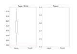
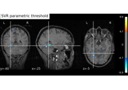

Examples Gallery¶

Distilled Conditional Randomization Test (dCRT) using Lasso vs Random Forest learners
Distilled Conditional Randomization Test (dCRT) using Lasso vs Random Forest learners



Support recovery on fMRI data
Distilled Conditional Randomization Test (dCRT) using Lasso vs Random Forest learners